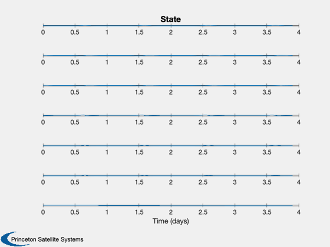
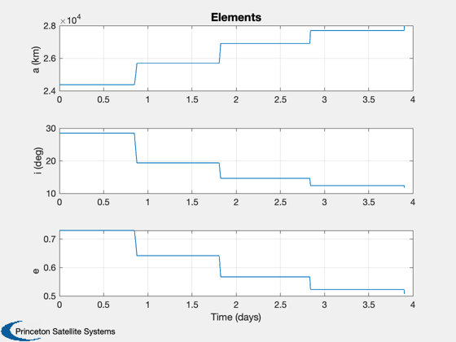
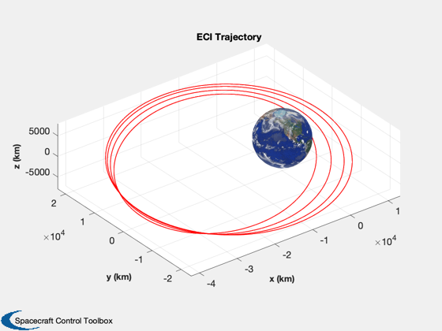

Perform LEOP (Launch and Early Analysis Phase) analysis.
This script allows you to select the number of burns, the rev (orbit) of each burn and the fraction of the total delta-v per burn. It then propagates the orbit using ode113.
------------------------------------------------------------------------- See also Constant, Plot2D, TimeLabl, Mag, Unit, RARP2A, RARP2E, OrbTrackECI3D, El2RV, Period, RV2A, RV2El, FOrbLEOP -------------------------------------------------------------------------
Contents
- Constants
- ode113 accuracy
- Plan is the fraction of the total required burn in a particular rev
- The insertion orbit
- Find the orbit r and v
- The drift orbit
- Compute apogee to find the total required velocity change
- Specify the ode113 accuracy
- Initialize the state vector
- Propagate the orbits
- Plot states
- Plot elements
- 3D orbit picture
%------------------------------------------------------------------------------- % Copyright (c) 2007, 2014 Princeton Satellite Systems, Inc. % All rights reserved. %-------------------------------------------------------------------------------
Constants
%----------
dToR = pi/180;
rToD = 180/pi;
ode113 accuracy
%----------------
absTol = 1e-12;
relTol = 1e-12;
Plan is the fraction of the total required burn in a particular rev
%-------------------------------------------------------------------- burnFraction = [0 0.5 0 0.3 0 0.15 0 0.05 0]; % LAE engine % http://cs.space.eads.net/sp/SpacecraftPropulsion/Bipropellant_Thrusters % /400N_Bipropellant_Apogee_Engine_S400.html %------------------------------------------------------------------------ d = struct(); d.thrust = 420; % N d.uE = 318*9.806; % km/s d.cDA = 2.7; % For drag model d.mu = Constant('mu earth'); mass = 3000; % Total fueled spacecraft mass in kg
The insertion orbit
%-------------------- rA = 42167; rP = 6578; i = 28.5*dToR; M = pi/4; % This is the separation point from the upper stage
Find the orbit r and v
%----------------------- e = RARP2E( rA, rP ); a = RARP2A( rA, rP ); el = [a i 0 0 e M]; [r, v] = El2RV( el ); fprintf('-----------------\n Transfer Orbit\n-----------------\n'); fprintf('Semi-major axis = %12.2f km ',el(1) ); fprintf('Inclination = %12.2f deg',el(2)*rToD); fprintf('Argument of perigee = %12.2f deg',el(3)*rToD); fprintf('Ascending node = %12.2f deg',el(4)*rToD); fprintf('Eccentricity = %12.2f ',el(5) ); fprintf('Mean Anomaly = %12.2f deg',el(6)*rToD);
----------------- Transfer Orbit ----------------- Semi-major axis = 24372.50 km Inclination = 28.50 degArgument of perigee = 0.00 degAscending node = 0.00 degEccentricity = 0.73 Mean Anomaly = 45.00 deg
The drift orbit
%----------------
aD = rA;
eD = 0;
iD = 0;
[rDrift, vDrift] = El2RV( [aD, iD, el(3), el(4), eD, pi ]);
Compute apogee to find the total required velocity change
%---------------------------------------------------------- [rA, vA] = El2RV( [el(1:5) pi] ); dV = vDrift - vA; dVMag = Mag(dV); mRatio = exp(dVMag/(d.uE/1000)); mFuel = mass*(mRatio - 1)/mRatio; tBurn = mFuel*d.uE/d.thrust; mDry = mass - mFuel; fprintf('\n-----------------\n Burn Plan \n-----------------\n'); fprintf('Delta V = %12.2f km/s\n',dVMag ); fprintf('Burn vector = [%8.5f;%8.5f;%8.5f]\n',Unit(dV)); fprintf('Fuel mass = %12.2f kg\n', mFuel); fprintf('Burn duration = %12.1f sec\n', tBurn);
----------------- Burn Plan ----------------- Delta V = 1.84 km/s Burn vector = [ 0.00000;-0.90982; 0.41501] Fuel mass = 1335.24 kg Burn duration = 9913.5 sec
Specify the ode113 accuracy
%---------------------------- xODEOptions = odeset( 'AbsTol', absTol, 'RelTol', relTol, 'events', @FOrbLEOPStopping );
Initialize the state vector
%----------------------------
x = [r;v;mass];
Propagate the orbits
%--------------------- tP = []; xP = []; t0 = 0; for k = 1:length(burnFraction) tBurnRev = tBurn*burnFraction(k); a = RV2A( Mag(x(1:3)), Mag(x(4:6)) ); p = Period( a ); fprintf('\n-----------------\n Burn Plan Rev %d \n-----------------\n',k); fprintf('Delta V = %12.2f km/s\n',dVMag ); fprintf('Burn vector = [%8.5f;%8.5f;%8.5f]\n',Unit(dV)); fprintf('Fuel mass = %12.2f kg\n', mFuel); fprintf('Burn duration = %12.1f sec\n', tBurnRev); % Thrust vector %-------------- d.uThrust = Unit(dV); % To prevent thruster firings %---------------------------- d.burnStart = 1e9; d.burnEnd = 1e9; % If a burn is scheduled use ode113 events %----------------------------------------- if( burnFraction(k) > 0 ) inBurn = 1; xODEOptions = odeset( 'AbsTol', absTol, 'RelTol', relTol, 'events', @FOrbLEOPStopping ); else inBurn = 0; xODEOptions = odeset( 'AbsTol', absTol, 'RelTol', relTol, 'events', @FOrbLEOPStopping ); end % We propagate until apogee and then back up early enough to do the next % burn %----------------------------------------------------------------------- [t, x] = ode113( @FOrbLEOP, [0,p], x, xODEOptions, d ); % Finish the propagation with the rest of the orbit starting with the % burn %-------------------------------------------------------------------- if( inBurn == 1) tApogee = t(end); tStart = tApogee - tBurnRev/2; j = find( t <= tStart , 1, 'last' ); x = x'; xP = [xP x(:,2:j)]; tP = [tP t(2:j)'+ t0]; x = x(:,j); xODEOptions = odeset( 'AbsTol', absTol, 'RelTol', relTol ); d.burnStart = tStart; d.burnEnd = tStart + tBurnRev; [t, x] = ode113( @FOrbLEOP, [d.burnStart p], x, xODEOptions, d ); end % Assemble the plotting arrays %----------------------------- x = x'; xP = [xP x(:,2:end)]; tP = [tP t(2:end)' + t0]; t0 = t0 + p; % The next initial condition %--------------------------- x = x(:,end); end
----------------- Burn Plan Rev 1 ----------------- Delta V = 1.84 km/s Burn vector = [ 0.00000;-0.90982; 0.41501] Fuel mass = 1335.24 kg Burn duration = 0.0 sec ----------------- Burn Plan Rev 2 ----------------- Delta V = 1.84 km/s Burn vector = [ 0.00000;-0.90982; 0.41501] Fuel mass = 1335.24 kg Burn duration = 4956.8 sec ----------------- Burn Plan Rev 3 ----------------- Delta V = 1.84 km/s Burn vector = [ 0.00000;-0.90982; 0.41501] Fuel mass = 1335.24 kg Burn duration = 0.0 sec ----------------- Burn Plan Rev 4 ----------------- Delta V = 1.84 km/s Burn vector = [ 0.00000;-0.90982; 0.41501] Fuel mass = 1335.24 kg Burn duration = 2974.1 sec ----------------- Burn Plan Rev 5 ----------------- Delta V = 1.84 km/s Burn vector = [ 0.00000;-0.90982; 0.41501] Fuel mass = 1335.24 kg Burn duration = 0.0 sec ----------------- Burn Plan Rev 6 ----------------- Delta V = 1.84 km/s Burn vector = [ 0.00000;-0.90982; 0.41501] Fuel mass = 1335.24 kg Burn duration = 1487.0 sec ----------------- Burn Plan Rev 7 ----------------- Delta V = 1.84 km/s Burn vector = [ 0.00000;-0.90982; 0.41501] Fuel mass = 1335.24 kg Burn duration = 0.0 sec ----------------- Burn Plan Rev 8 ----------------- Delta V = 1.84 km/s Burn vector = [ 0.00000;-0.90982; 0.41501] Fuel mass = 1335.24 kg Burn duration = 495.7 sec ----------------- Burn Plan Rev 9 ----------------- Delta V = 1.84 km/s Burn vector = [ 0.00000;-0.90982; 0.41501] Fuel mass = 1335.24 kg Burn duration = 0.0 sec
Plot states
%------------ [t, tL] = TimeLabl( tP ); xP(7,:) = xP(7,:) - mDry; Plot2D( t, xP, tL, {'x (km)', 'y (km)', 'z (km)' 'v_x (km/s)' 'v_y (km/s)' 'v_z (km/s)' 'm_f (kg)'}, 'State' );
Plot elements
%--------------- n = size(xP,2); el = zeros(6,n); for k = 1:n el(:,k) = RV2El( xP(1:3,k), xP(4:6,k) ); end el([2:4 6],:) = el([2:4 6],:)*rToD; Plot2D( t, el([1 2 5],:), tL, {'a (km)', 'i (deg)', 'e'}, 'Elements' );
3D orbit picture
%----------------- OrbTrackECI3D( xP(1:3,:)); %--------------------------------------